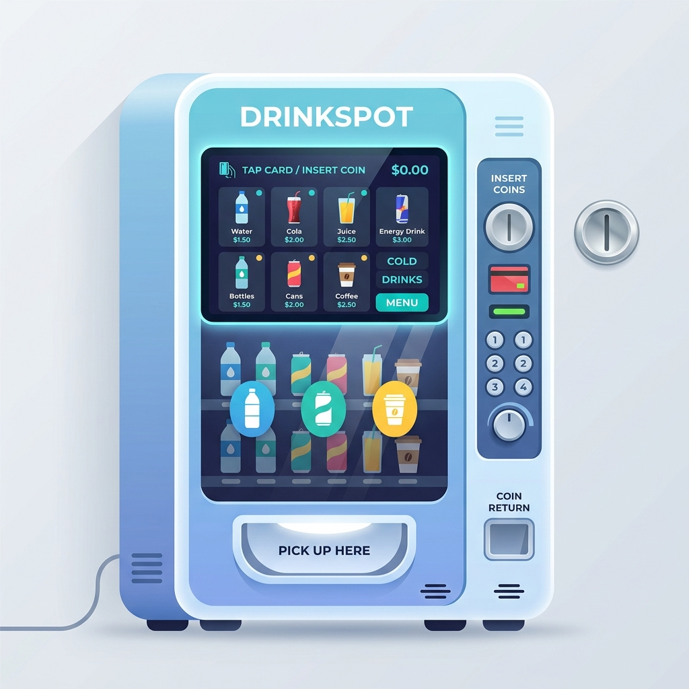
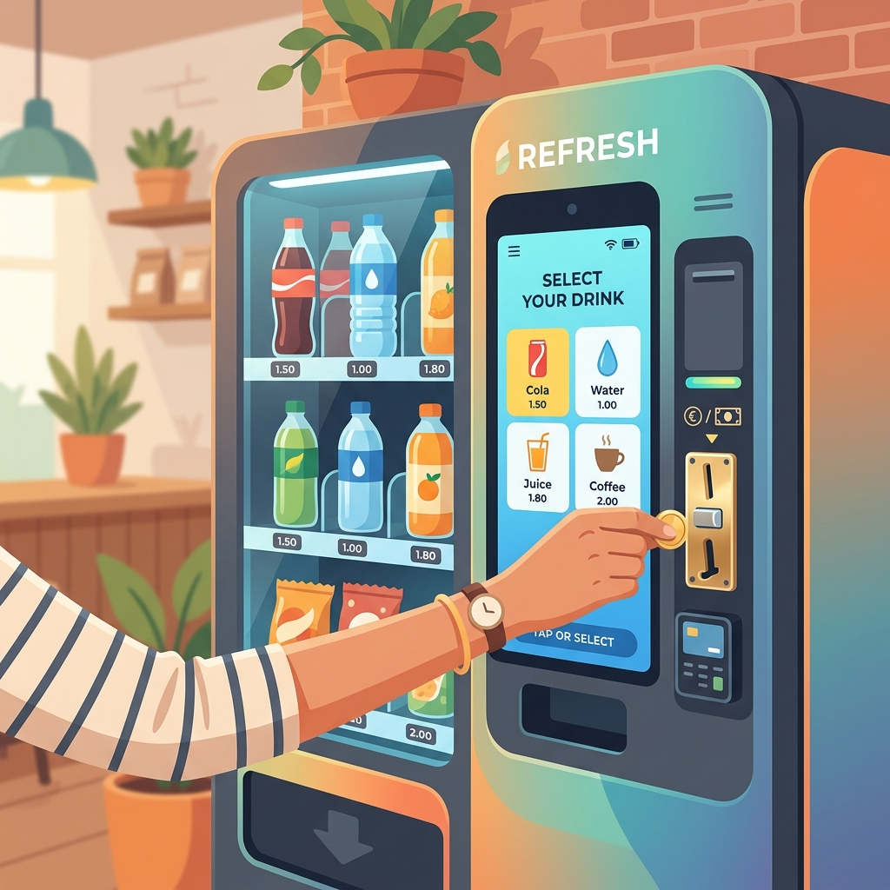

ソフトウェアテストについて
ABOUT SOFTWARE TESTING
ソフトウェアテストとは？
バグ探しを超える、品質と体験の設計
「ソフトウェアテスト」と聞くと、完成したプログラムのバグ（不具合）を見つけ出すだけの作業だと思われがちです。
しかし、私たちの考えるテストとは、製品がユーザーにとって「本当に価値があるか」「安心して使えるか」を設計フェーズから見極め、担保するクリエイティブなプロセスです。
身の回りにあふれる「ソフトウェア」
ソフトウェアは、スマートフォンやPCのアプリだけではありません。
現代の暮らしを支える「自動販売機」や「電子レンジ」、自動車、炊飯器なども、すべて内部でソフトウェアが動き、機械を制御しています。
ボタンを押したときに温度が変わる、コインを入れると金額が計算されるといった日常の当たり前は、すべてソフトウェアの正確な動作によって成り立っています。だからこそ、ハードウェアと同様に、内部のソフトウェアの信頼性が極めて重要になるのです。

バリデーション & バリフィケーション（V&V）
私たちの信念：「信じてつくる開発」と、「疑って検証するテスト」
開発は、ユーザーが通る「正規のルート（正常系）」を信じて形にするプロセスです。一方、テストはユーザーが遭遇するかもしれない「裏のルート（異常系・エラー）」をあらかじめ疑い、先回りして検証するプロセスです。
この「疑う視点」は、仕様の穴を疑う「バリデーション（妥当性確認）」と、実装のバグを疑う「バリフィケーション（検証）」の2つに分かれます。自動販売機を例に、違いを比較してみましょう。

日常のアクションに潜む2つの視点
「コインを入れる」「ボタンを押す」といった日常の何気ないアクションの裏側にも、「設計上の判断」と「実装の正しさ」の2つの視点が存在します。テストエンジニアがどのようなアプローチで検証を行っているのか、比較してみましょう。
ユーザーの要求や利用シーンに適合しているかを検証します。初期段階から「仕様や使い勝手の妥当性」を見極めます。
- 「迷わずに操作できるか？」を疑う 「金額の確認が難しいと、ユーザーが購入可否に迷うのでは？」と疑い、金額到達時にボタンを自動点灯させる仕様を検討・要求します。
- 「お釣りが出ないトラブル」を疑う 「小銭不足で千円札を入れたら、お釣りが出ずにお金が吸い込まれるのでは？」と疑い、投入口のロックと「つり銭切れ」表示の仕様を定義します。
- 「エラー時のコイン飲み込み」を疑う 「汚れたコインが認識されない際、機内に留まって飲み込まれるのでは？」と疑い、お釣り口へ直接スルー返却するセーフティを定義します。
設計要件通りに「正しくシステムが作られているか」を、実際に動かして検証します。
- 「点灯バグや表示のズレ」を疑う 「140円を入れた際、160円の商品が誤点灯したり、140円の商品が消灯したままになったりしないか？」を実機で疑って確認します。
- 「物理的なロック制御の欠陥」を疑う お釣り用小銭を空にした実機を使い、「本当に千円札の投入口がロックされ、強引に入れても弾かれるか？」を厳しく検証します。
- 「金額の誤減算や排出不良」を疑う 「購入時、残高が余分に減ったり、違う商品が出たり、物理的に商品が途中で詰まったりしないか？」を動作させて疑います。
ジラーチがこだわる「セーフティ動作」
私たちは、正常に動くシステムを保証することはもちろん、「エラーが起きたとき、いかに安全で親切に振る舞えるか」の検証に最もこだわっています。
ユーザーが最もストレスを感じるのは、不具合そのものよりも、「エラー時の不親切な挙動（フリーズする、お金が戻らない、データが消える）」です。
例えば、自動販売機で「汚れて読み込めないコインが投入された際、飲み込まずに即座にお釣り口へ返却するセーフティ（安全設計）」を、設計段階から提案・テストしてユーザーの不利益をゼロにするのが当社のQA品質です。